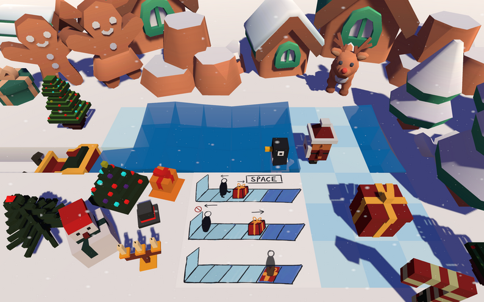
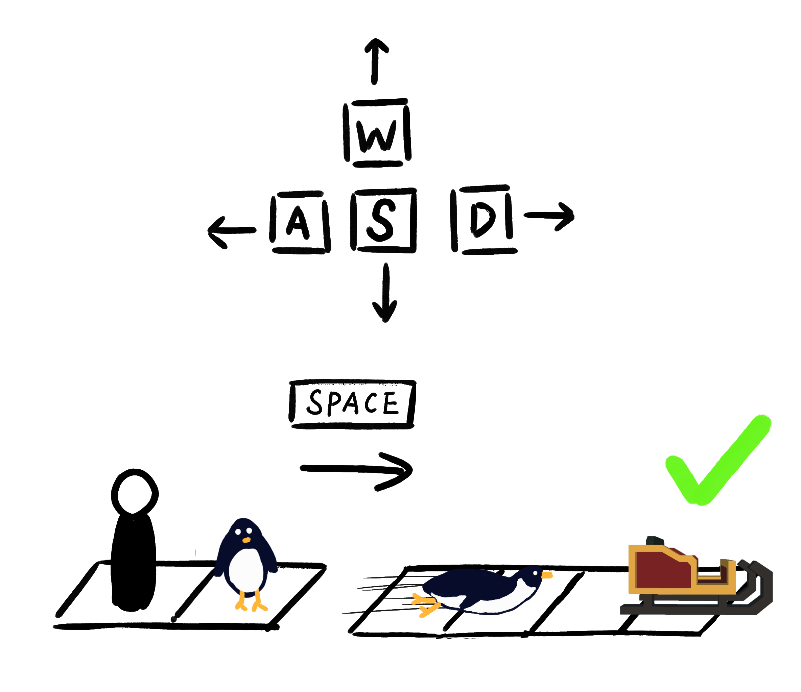
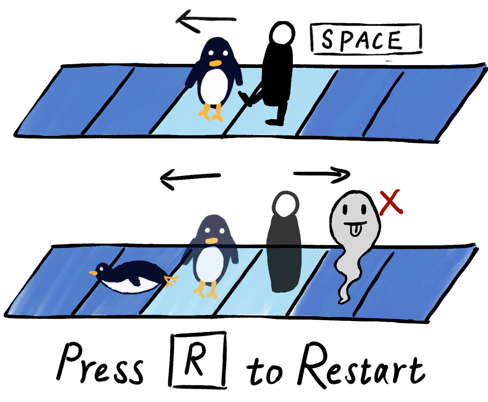
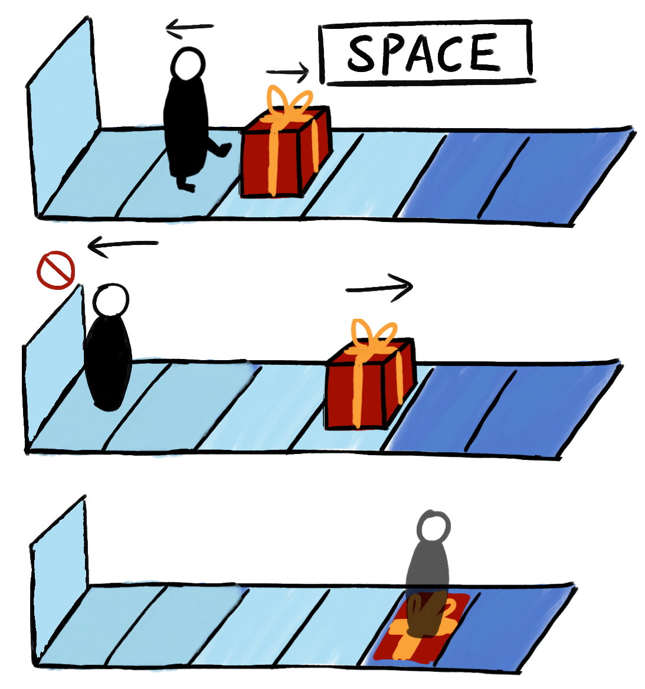
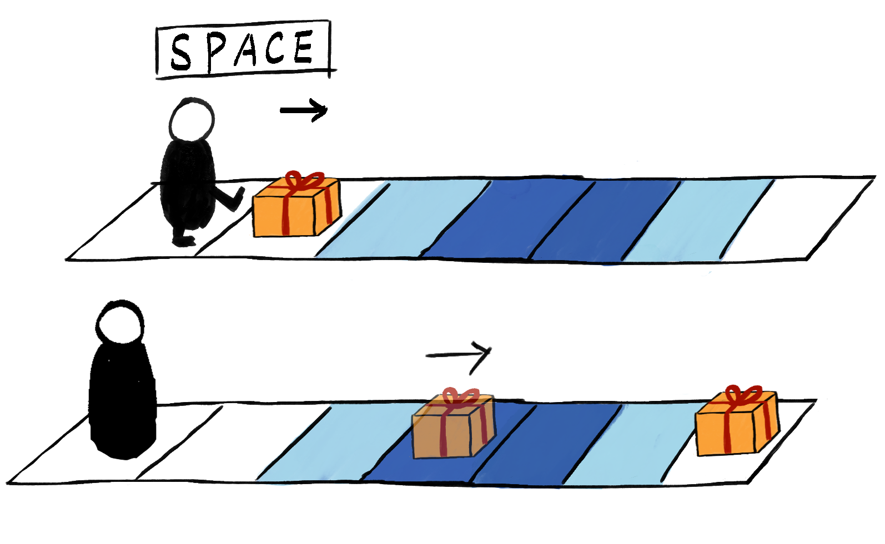

Push, slide, and plan your way across the ice.
A 2.5D winter puzzle game that began as a game jam prototype and later grew into a more complete experience with refined systems, more levels, and a proper level select flow.
The Overview
Peng-Win! began as a holiday game jam project: a compact Sokoban-style puzzle game built around clear movement rules, playful winter theming, and the satisfaction of solving spatial problems one push at a time.
The core loop is immediately readable. You move across a grid, reposition interactive objects, and search for the exact order of actions that unlocks the route forward. The appeal comes from the familiar logic of box-pushing, but the game layers on slippery surfaces and terrain-specific interactions to make the space feel more dynamic than a basic Sokoban clone.
After the jam version, we kept developing the project further. That second phase was not just polish: we reworked and clarified mechanics, expanded the level set, and added a level select interface so the experience felt structured, replayable, and easier to navigate as a full prototype.
Core Experience & Mechanics
Sokoban Foundation
The game starts from the clean, readable grammar of Sokoban: each move matters, pushing changes the whole puzzle state, and solutions depend on sequencing rather than speed.
Ice-Surface Variation
Ice changes how movement is read and predicted. Instead of solving only for position, the player also solves for momentum, stopping points, and how the environment transforms a simple push into a chain reaction.
What made the post-jam version meaningful was that the mechanic set became more deliberate. Instead of leaving the idea at a single clever hook, we used iteration to tune readability, level pacing, and the relationship between obstacles so later puzzles could teach, remix, and escalate the rules more cleanly.
From Jam Prototype to Expanded Build
The original jam version proved the core idea worked: pushing objects across ice was expressive and immediately playable. The follow-up development focused on making that idea sustainable across a longer play session.
- Mechanic refinement: rule interactions were clarified so puzzles felt fairer and easier to read.
- More levels: the game moved beyond a jam-sized slice and started supporting a fuller difficulty curve.
- Level select UI: a dedicated selection screen made progression clearer and made replaying individual puzzles much easier.
That expansion step matters because it turns a jam concept into a portfolio-ready design case: not only “we had an idea,” but “we understood how to deepen the idea, organize it, and improve the player experience after the first playable.”
Rule Presentation & Visual Communication
Because puzzle games live or die on readability, the project also needed clear rule communication. These screens show how the game introduces movement logic and situational interactions to the player.




Using lightweight visual onboarding like this helps a systems-driven puzzle game stay inviting. It supports the tone of the project too: playful, wintry, and approachable, even as the puzzles become more demanding.